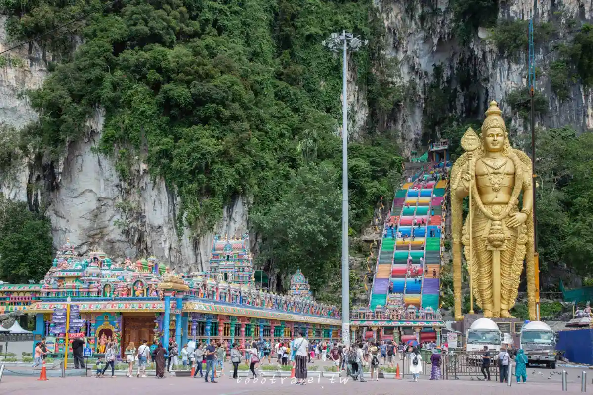
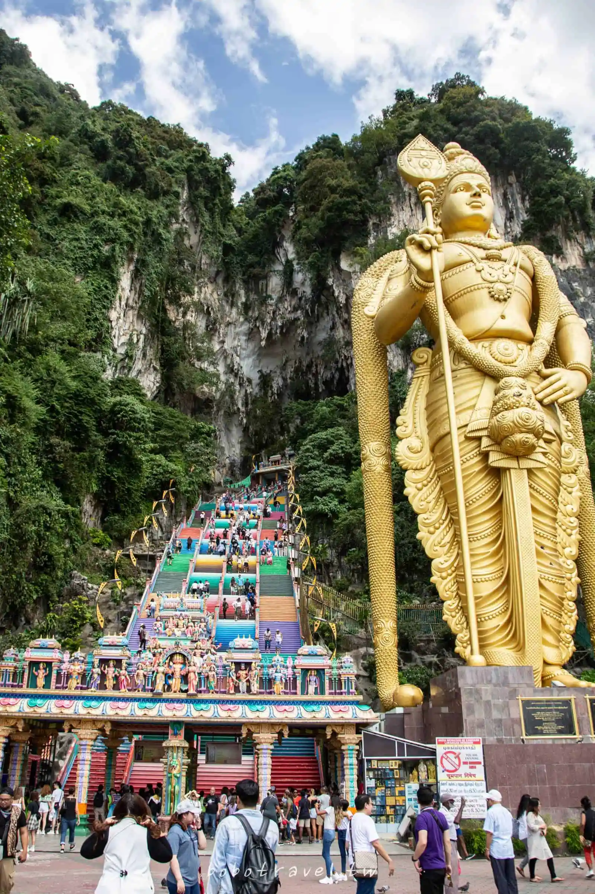
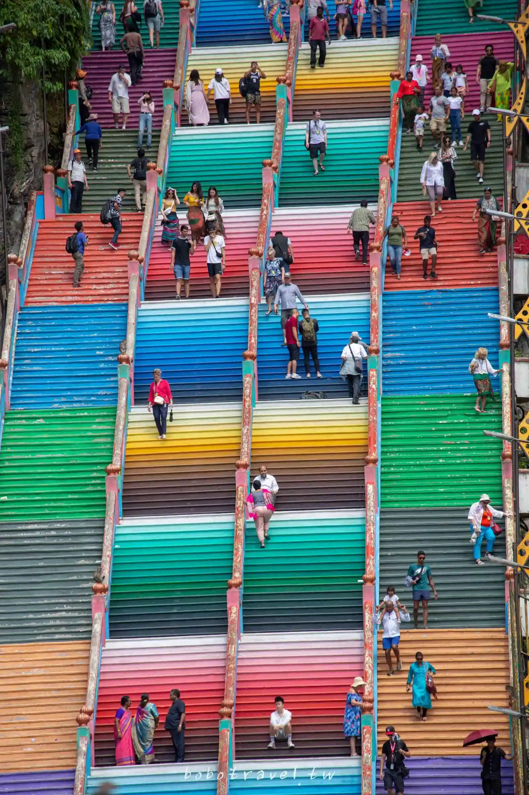
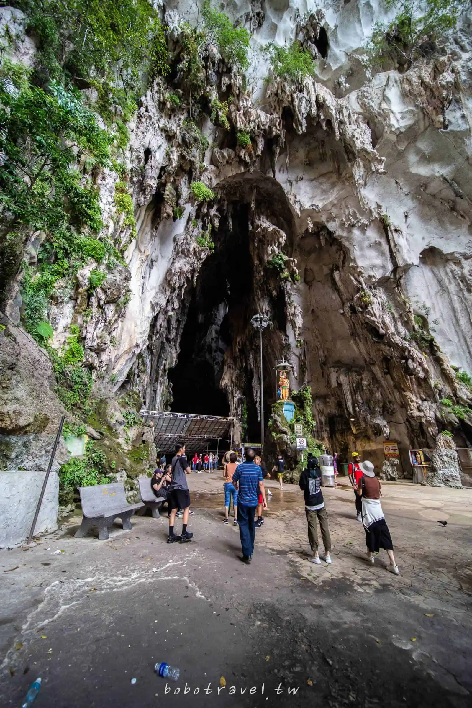

黑風洞
位於吉隆坡近郊雪蘭莪的黑風洞(Batu Caves)是近來馬來西亞討論度極高的景點，初聽到黑風洞的名字，猜想這裡是應該是一個黑漆漆的山洞，查了資料後才發現我完全誤會了祂，272個彩色台階散落山崖之上，旁邊佇立的金色的大神像，在石灰岩山壁旁壯觀極了。
許多遊客都是為了一睹彩虹階梯而來，而其實黑風洞本來是印度教神廟，神廟的在階梯最上方的石灰岩洞內，即使是印度教徒想要朝拜也必須通過網美階梯，是一個十分特別又有趣的景點。
黑風洞 Batu Caves
地 址： Gombak, 68100 Batu Caves, Selangor, Malaysia
開放時間： 神廟洞8:00~21:00
黑洞週二~週五10:00~17:00、周末10:30~17:30
門 票: 神廟洞免費
電 話: +60 3-6189 6284
地理坐标: 3°14′14.64″N 101°41′2.06″E / 3.2374000°N 101.6839056°E
由於黑風洞是一個宗教場所，因此有要求參觀者應穿著得體，避免暴露過多皮膚，下半身穿著注意必須在膝蓋以下的長度，女生如果穿膝上短裙短褲就會被要求購買沙龍，一件是15令吉。
金光閃閃的大神像名為「室建陀神像」，屬於興都教(印度教)的神，43公尺的高度目前全世界第二大的印度教神像，據說當初由15位雕刻家一起合力才完成的。
遠看時只覺得壯觀，靠近時更加震撼於祂的巍峨，在一片繽紛中仍不失莊嚴。
彩虹階梯是2018年9月才漆上，和印度教的多彩相互呼應，從停車場的位置用長焦拍照，世界宛如被翻轉了90度，人們垂直行走，斑斕的階梯鑲嵌在山壁之中。
石灰岩有四億年的歷史，階梯上方的大洞穴名為「神廟洞」，也是神廟位置所在。
黑風洞是吉隆坡值得一去的景點，交通簡單方便，拍起照來好看，神廟也讓人難忘，是我這趟在吉隆坡印象最深刻的地方，如果來到吉隆坡，不妨來走走吧！
飛往馬來西亞的便宜機票：查詢
交通資訊
該景點位置位於吉隆坡郊區，距離市區以北約十幾公里處，很容易到達，以下有幾種交通方式可以選擇：
從吉隆坡中央車站（KL Sentral）搭乘KTM Komuter火車前往直達黑風洞站（Batu Caves）車程約為30分鐘左右。從黑風洞站出站後，步行約10分鐘即可抵達黑風洞入口，因Komuter是一個輕型的通勤鐵路，時刻表很不準確，非常容易誤點，優點是票價便宜，比較適合有耐心而且不趕時間的旅客。
Grab CAR
從吉隆坡市區搭乘計程車或Grab前往，如果沒塞車的話，車程約25分鐘，費用約20令吉。這是最方便也最快速的方式，我個人也是選擇搭Grab。
叫車流程
1. 下载App： 在您的智能手机上下载并安装Grab应用程序。确保您的应用程序版本是最新的，以获取最准确的信息。
2. 注册/登录： 打开应用程序后，您可能需要注册一个帐户并登录。如果您已经有帐户，只需登录即可。
3. 输入目的地： 在应用程序中，输入您的目的地，即吉隆坡的双峰塔。您可以选择具体的地址或直接输入“Petronas Towers”来寻找附近的位置。
4. 选择车型： 应用程序将显示可用的车型选项，例如普通轿车、专车、豪华车等。选择适合您需求和预算的车型。
5. 确认订单： 确认您的订单，检查费用和车辆信息。一旦您确认订单，系统将为您匹配最近的可用司机。
6. 等待司机： 等待司机接受您的订单。您可以看到司机的姓名、车牌号码以及车型等信息。
7. 乘车： 一旦司机接受了订单，他们将前往您的位置。在司机抵达后，确认司机的身份信息（车牌号、姓名等），然后搭乘车辆前往目的地。
8. 支付： 行程结束后，您可以使用应用程序内的支付系统支付车费。通常，您可以选择使用现金或电子支付方式。
请注意，网约车的可用性和规则可能因地区而异，因此在使用之前，最好查看当地的规定和服务条款。此外，请确保您的手机电量充足，以便在需要时保持联系。
iOS Android
馬來西亞的大部分街道上，都不乏計程車，除了接載禁區，您可在街上輕易呼截計程車。
馬來西亞的計程車均裝有里程表和空調，車廂清潔，車資相比網約車貴一些。